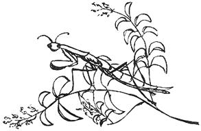
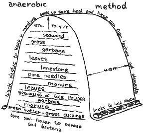

Grow Your Own
An introduction to Organic Gardening.
By Jeanie Darlington
May/June 1970
Tangy red tomatoes, butter peas, crisp lettuce, sweet onions, corn on the cob, watermelon that dripsoff the chin and other succulent goodies . . . fresh from your own garden. All pure, natural and organically grown.
It's a great dream - but where do you start? Especially if you were raised on concrete and have no handle on terms like "compost,""rock phosphate "and "ecological balance."
Well, we've all got to begin somewhere and Jeanie Darlington has written a great little book that is subtitled "An Introduction to Organic Gardening. " It is just that and MOTHER will be featuring sections from time to time.
Here, then, is the first installment of Grow Your Own.
I haven't been a mad gardener all my life. In fact, I really only began in the spring of `68 with a vegetable g arden. I had tended a small flower garden behind our flat in London, but this was my first real attempt. And it was the first whole summer Sandy and I had ever been in one place since we'd met 6 years before.
We moved into a cottage in Albany, California, just north of Berkeley, in August the year before. There was a nice size back yard full of dying roses, 3 foot tall grass and 35 year old fruit trees - apple, pear, apricot and plum. The house was all overgrown with vines and looked straight out of Hansel and Gretel so we left it that way. But we did cut the grass, prune the roses, and spray them and the fruit trees with some poison or other. It seemed like the right thing to do. We didn't do much else until the next spring when I decided I might try planting some tomatoes.
I was working at a nursery at the time, so I had plenty of knowledge about all the super fertilizers and magic bug killers. And I was pretty good at selling these to the customers. One spray company even paid the employees dividends each month according to how much of their product we sold. Naturally I pushed it. Fortunately, it was the least toxic spray we carried and was safe (?) to be used on vegetables within one day of harvest. It didn't contain DDT. But I wondered, 'If it kills all the bugs it says it does, how come one day will make it safe for me?'
Here's a sample weekly ad from the nursery:
We've got 'em . . . we've got the guns to murder your weeds, kill them so that they will lay off for awhile. Come in today and ask for a killer.
And then there were the combination chemical fertilizers, 0-10-10, 10-20-10, the numbers denoting the nitrogen, phosphorus and potash (NPK) content. The box told what the fertilizer was for, and that was that. Easy. But a few customers swore by manure and manure alone. How could this be?
Luckily, I happened to pick up from the floor one day an introductory offer to 10 months of Organic Gardening and Farming Magazine at half price. It dawned on me then, that I wanted to learn how to garden with natural fertilizers and without poisons. I could hardly wait to receive my first issue. With the offer, I was sent a handy pamphlet as well, called "Organic Fertilizing - Secret of Garden Experts." From then on, I was on the road to discovering about the mysteries of blood meal, ground rock phosphate, kelp meal and other such exotic sounding things. I had thought Organic Gardening was something weird old spinsters in Marin County did, like saving seed from year to year for the past 35 years and things like that.
At about this time, I quit the nursery. A third of the products I was selling were only making Standard Oil richer and the air and earth more polluted. I felt rather guilty.
In the meantime, I had begun my garden. I chose a small 10' X 10' grassy spot which received full sun all day. I didn't really know where to start, but I thought I should somehow kill the grass. This was before I'd found the magazine offer and I didn't know that I could simply turn the grass under and leave it to decompose. So I applied a lot of sulphate of ammonia, which is a super rich nitrogenous chemical fertilizer, to burn off the grass. (Chemical fertilizers used in excess, and without water, will burn.) I later learned that this was a big mistake because the fertilizer killed the earthworms, and because the sulphur residue left by the fertilizer ate away whatever organic matter I added for quite a while. Fortunately the magazine and the fertilizer pamphlet arrived in time to save me from other such disasters.
I now had a 10' by 10' plot of hard, clay soil rich in nitrogen. With a lot of hard work, Sandy and I and my visiting sister and brother-in-law managed to turn over the soil. By the time we finished that, the fertilizer pamphlet had arrived. In it I read that I still needed to add some phosphorus (P) and potash (K) and some organic matter. So I dug in a sack of steer manure thinking that would be enough, organic matter. And I sprinkled on 5 Ibs. of bone meal (P) and a whole lot of ashes (K) from our wood stove.
Then I was ready to plant. I planted a lot of things both seeds and seedlings. Beginner's luck was with me and most everything began to grow. But the soil was still hard as a rock. Water would turn it to gooey mud, and a few days later it was cracked and rock-hard again. I cultivated it, but that didn't help much.
By then I was beginning to realize the importance of organic matter and proper soil preparation. That 10' by 10' plot could have used 10 sacks of manure.
Good soil should contain 50% air and water, 45% inorganic minerals from rock fragments, and 5% organic matter or humus. I seemed to have no air and no humus in my soil, only hard clay and plenty of sulphur residue. In fact, this is the state of many peoples' garden soils. And then they wonder why they don't have green thumbs.
The clay was supporting the plants and they were growing, but I wanted to improve the soil, because I was sure they would grow better. Compost seemed to be the answer. I could make my own humus out of weeds and grass and other things. And I had read that lots of compost would help reduce the toxic effects of a chemically treated soil.
I began my compost pile somewhat sceptically. Would all those weeds and grass clippings and leaves really turn into the beautiful, black crumbly substance they said it would? I added some vegetable peelings and scraps to the pile too, but not very often out of pure laziness. It was easier by far to throw them in the garbage bag below the sink than to walk all the way down the back stairs to the compost pile. It never occured to me then that I could separate the garbage.
I covered the compost pile with black plastic and it never smelled I kept the pile moist and turned it after a few weeks. After a month, I began to see evidence of a "black crumbly substance" and I was thrilled. This style of gardening really appealed to me. I felt a bit like an alchemist. Later on, when I began to see the effects of this "black gold" on my plants, I really believed in compost!
Meanwhile, my 10' by 10' garden was coming along. Eight tomato plants crammed in amongst broccoli, zuccini, italian cocozelle, bell pepper, eggplant, beets, lettuce, italian flat beans, snow peas, and way too much swiss chard, out of loyalty to an early childhood memory. The taste of swiss chard from the neighborhood victory garden will always remain with me. A delicious earthy taste that I hadn't forgotten, despite the disappearance of swiss chard after the war - on our table anyway.
My parents had always been enthusiastic gardeners. They had a compost pile and they threw around words like humus and manure (titter, giggle).
I used to help my father root pachysandra cuttings in flats of sand, 100 plants per flat, a penny a plant. It was great fun. He used the plant as a ground cover in shady spots and under trees. My parents spent almost every available minute of the weekends in the yard, cutting grass, pruning roses, planting annuals, dividing perenniels, and planting new trees. They claimed it was fun and relaxing. Now I see what they meant.
Working with the earth, smelling it, improving it, watching things grow in it made me feel good. It slowed me down and made life seem OK even if I was depressed or sad.
And so the first summer went by. Some failures, but not many. Mostly great success. Squash to give away, chinese pea pods that melted in our mouths, and the most delicious beans I had ever eaten. There were wonderful sweet tomatoes - all kinds - Beefsteak, Spring Giant, Pearson, Ace, Earliana, Jubilee, red pear, and cherry, all the way up to Thanksgiving. And lots of swiss chard.
There were very few bugs and absolutely no need for poisons. The few bugs I had were controlled by putting ashes on wet leaves, planting marigolds and using a home ground onion-pepper-garlic spray. The Mexican bean beetle was there, but we still had plenty of beans.
The tomatoes, planted too close together, twined all around each other and broke the stakes supporting them, but we still had plenty of tomatoes. And the hay mulch kept them from rotting.
Mulch, that mysterious word, was largely responsible for the success of the garden. The early summer sun had been baking and cracking the hard soil, and I knew I needed more humus. My compost was on the way, but it would take several months. I did add some more manure and this helped some. Then I discovered mulch. Each month, Organic Gardening magazine would arrive with more good ideas to help me. I only wished I could have known it all to begin with.
Mulch is a layer of organic matter laid down on top of the soil around the plants and between the rows. It keeps the soil temperature even, holds moisture in discourages weeds, prevents a hard top crust on the soil and eventually decays into rich humus.
The nearest available mulch for me was right next door in the vacant lot - dry wild grass 4 and 5 feet tall. I cut a lot of it and put it down 6 inches deep between the rows and up snugly against the plants.
Then I didn't have to cultivate or weed anymore. 1 found I used a lot less water. The plants seemed to like the even soil temperature. It acted like a thermal blanket, and it looked nice and felt good on my bare feet when I walked around picking things. Our cat, Lurvie, loved to lie on it in the shade of certain plants. She thought I put it down just for her.
A few days after Thanksgiving, I took the turkey bones out to the garden to bury them. The tomato and squash vines were brown and dead from a very light frost. This left just a few swiss chard plants here and there. I buried the vines well in the middle of the compost pile so that the thick stems would decay sufficiently.
The year was almost over and the garden was finished. I didn't think about things I might have planted for winter crops, not knowing then that it was possible. But I wasn't sad. It had been a fine summer. So I sprinkled the ground with bone and blood meal and put on a nice blanket of leaves. The hay mulch had long since decayed away into the soil.
During the fall of that year, Sandy and I noticed how many birds there were in the yard and especially in the entwining rose and pyracantha trees outside our kitchen window. We had been living in our cottage for a year and four months by then, and hadn't used any poison sprays for the past 9 or 10 months. The birds had passed the word around and had already eaten every red pyracantha berry. The berries made them drunk. One tipsy bird flew into the window once, but luckily didn't break the glass.
I made a bird feeder by tacking a 1 inch edge around a 2 by 1 foot board. I tied it up in the rose tree 3 feet outside the kitchen window and we spent many hours watching them. It's a lot better than the Today show at breakfast. Sometimes we layed out a smorgasbord for them of suet, birdseed, oatmeal, raisins and peanut butter. They even developed a snob taste for health food peanut butter, and wouldn't touch that cheap, hydrogenated stuff. The scrub jays were really funny. They came exclusively for sunflower seeds and would squawk and carry on so that they could have the whole feeder to themselves. They would try to fill up their beaks with three or four seeds and then fly away to a rooftop to eat them. Invariably, they would drop all but one seed while they were trying to stuff the fourth one in, but they would keep trying anyway. And there were catbirds, song sparrows, house finches and a cute little thing I called fat fluffy.
By mid-January, I was already planning for next summer. The seed catalogues had begun to arrive, showing all kinds of delicious things I could raise. It was too early to begin planting, but at least I could write an article for the paper Sandy had been writing for during the last year - the San Francisco Express Times. I wanted to help people get started on gardens and not make the mistakes I had. I wrote an article on soil preparation, so that the organic fertilizer applied would be in an available form come March or April. That was the beginning of Grow Your Own.
By January 30, I had already made a crude cold frame for starting seedlings and I had cut the grass once. The rains were warm and my fingers were itching.
A few weeks later, I was digging manure and lots of compost into the vegetable garden and flower border gardens. The vegetable patch looked pretty good although it still needed plenty more organic matter. It was a vast improvement over last year's clay patch.
On February 14, I planted some snow pea seeds. The snails ate them all when they were one inch high. The snails were really thick, due to a very wet winter. But I planted some more seeds and devised a cheese-cloth cover. Soon after, my beets, carrots and parsley seeds went in. As the weather warmed up, I started a lot of seeds in peat pots for the cold frame.
Meanwhile I had been thinking about how I could try to restore the ecological balance in the backyard. The birds had come back and were already busy eating lots of insects on the fruit tree branches. One night while out snail hunting, I encountered a lizard. It scared the wits out of me, until I remembered that they ate slugs. And I knew I could order lady bugs and praying mantis egg cases.
In this case, when I speak of "restoring the ecological balance," I mean that I wanted to cut down on the plant eating bugs without resorting to bug sprays. To do that, you invite certain predatory, carnivorous insects into your garden, such as ladybugs and mantids. This is a little hard in a small backyard, because a neighbor's spray program could defeat the effort. But it was worth a try and it only cost me $4.00. The lady bugs and mantids arrived in early April. After eating their fill of aphids, the lady bugs mated, layed eggs and died because it was the end of their life cycle. By the end of May, the baby mantids had hatched and the new ladybugs had come out of their larvae stage.
The lady bugs ate aphids, mealybugs, scale and many other tiny insects. There were plenty of them around. We never did figure out exactly what the mantids ate, but they looked fat and well fed and were very tame. I only saw one or two Mexican bean beetles, and it is said that mantids like them. All I know is that my bean leaves weren't eaten to a lacey remain of veins like they were the year before. And every once in a while, little pint-sized birds would hop amongst the rose bushes and gobble all the aphids off each new shoot.
The peas grew 6 feet high, despite the fact they were dwarf grey sugar peas (2 and 1/2 feet maximum said the package). We were eating them from the middle of May through the end of June. Beets and carrots soon followed. Then broccoli and chard; italian and Kentucky Wonder beans; white corn, artichokes, zuccini, greyzini, italian cocozelle; oak leaf and ruby lettuce; escarole and endive; shallots, onions and leeks; and finally Spring Giant, Pearson and yellow pear tomatoes. The tomatoes ripened very late, but that was because I had rotated the crop from last year's spot and it wasn't as hot and sunny in the new place. Now I know that rotation isn't really necessary as long as you replenish the organic matter in the soil. The soil bacteria working on the humus will destroy any disease organisms connected with tomatoes if they are there.
I also planted an herb garden containing parsley, tarragon, mint, borage, oregano, sweet marjoram, sage, chevril, silver and lemon thyme, lavender, rosemary, chives, comfrey and catnip. There were flowers here and there alongside the steps in a little triangular plot. Here I had sowed a few packets of seed - Old Fashioned Garden, California Wild Flowers, Morning Glory and Poppies. The result was really a knockout - a mass of every color but mainly pinks and reds and blues and purples. It was like having a full blown real life Matisse right in your own back yard for three solid months. Often Sandy would walk silently around the yard, staring at everything. It was a form of meditation.
We loved watching the lady bugs, who especially liked to live in the upper leaves of the sunflowers. Often they would fly down and land on our shoulders and walk along for a bit and then go back to their roost. A friendly hello.
The mantids seemed to like the parsley and dusty miller best for their homes, although one even migrated to the long row of potted plants on our front porch in late August, where he contemplated a tiny piece of chicken we offered him for four hours before deciding not to eat it. We named him Manty and he stayed on the porch until early December, living in a pot of basil. He shed his skin three times and ate baby leafhoppers and a worm Sandy once brought him. On his last skin moult, he acquired a pair of long brown wings, and soon after he wandered away. To mate, then die? The Bay Area's weather is not mild enough for mantids to survive the winter.
I hope this book will help people get started growing their own vegetables and flowers organically. Having a garden is such a wonderful experience.
Some people still wonder why go to all the trouble to do it organically. I think it's much simpler to garden organically, at least on a small backyard scale. People are beginning to be aware of ecology. Organic gardening is something each of us can do to help. I'm quite sure it's cheaper to garden organically than with synthetic chemicals. You don't have to buy five different types of poison sprays and several different fertilizer mixes. Compost can be made for free or for a very little bit of money. For less than $20.00, I bought 100 lbs. each of blood meal (N), phosphate (P), and granite dust (K). That will last me several years.
It's without a doubt more fun to garden organically. It's nice to have living things like Manty and the ladybugs around. They become friends. And it's a good influence on your children. It's a pleasure to dig into rich soil, full of fat happy earthworms. I love watching the birds splash around in our improvised bird bath and knowing that any bread I toss out to them will be gone in several hours.
Organically grown food really does taste better. Unfortunately I have seen some pretty sad looking organic produce at some health food stores. I don't know if this is due to the problems of large scale farming, or bad shipping and storage methods or what. My vegetables almost always look beautiful enough to be photographed for seed catalogues and I'm no veteran farmer.
Most importantly, it's better for your soul to garden organically. If you use chemical fertilizers, you are disregarding the fact that soil is a living breathing thing. Soil becomes only a medium which supports plants upright. Chemical fertilizers destroy many life forms such as beneficial soil bacteria and earthworms. Poison sprays not only pollute the atmosphere, but also kill many harmless insects and many helpful predators, thus destroying the balance of nature. Gardening organically is working in harmony with nature.
Notes:
1. All of the dates in this book refer to the Bay Area, where the first killing frost comes around November 30 and the last killing frost comes around January 30. But as it still takes another month and a half before most spring planting can begin, the frost date is rather meaningless. In most cases, you can plant tomatoes one week after the last killing frost. Here we wait until April 1st at least. Check with local successful gardeners for the best planting dates in your area.
2. My experience with organic gardening has been with a small backyard garden. This book is meant to tell you the basics of what you need to know to garden organically on a small scale family basis. As the size of your garden increases, certain factors may change. But everything in this book can apply to gardens at least up to 100' by 200'.
I didn't grow my garden to save money on the food bill. That would be pretty hard to do with a 10' by 10' garden. It probably costs about the same or a little bit more than buying vegetables at the supermarket. But I get so much pleasure going out to the garden on a cold December morning to pull some leeks for a nice leek and potato soup, and going out again a few minutes before dinner to get some tender oakleaf and ruby lettuce leaves for a crunchy salad. It isn't the same as supermarket buying.
With a larger garden, you do begin to save money by raising vegetables.
3. Throughout this book you will be reading about N (Nitrogen), P (Phosphorus), and K (Potash). These elements are very important. It would help you to either memorize the symbols or remember to refer back here.
HUMUS
Soil is a living, breathing thing. It is ideally made up of 50% air and water, 45% inorganic minerals from rock fragments, and the rest organic matter, which is called humus.
The virgin soil of this country once contained an average of 4% humus. This figure is now down to about 1.5% or less. The amount of water and air is proportionately down to about 30%, due to the lack of humus. There is no room for water and air in hard, compacted soil. And the inorganic mineral content is up to 68.5%.
Half of this mineral content is due to chemical fertilizer residues that have built up in abnormal and damaging quantities. The continued use of chemical fertilizers and sprays (which leach down into the soil,) is already a serious problem and is getting much worse, as you probably know by now from articles in newspapers and magazines.
Fortunately, it is quite easy to correct poor soil. But it takes time. You see, with chemicals you get "instant" results, and that has a lot of appeal. Organic processes are natural, and slower.
To correct poor soil, add lots of humus in the form of compost, animal manure, green manure (plant an area to clover, vetch or a legume, and turn it under), and heavy mulches. And add the right amount of organic minerals, such as rock phosphate and granite dust or greensand.
Soil rich in humus has structural strength. Humus helps form aggregates of soil particles that cling together and give each other strength to resist crushing, so that there is plenty of air and water space in this friable soil. Humus feeds the microorganisms, the beneficial soil bacteria and fungii which in turn create a fertile environment for the plants. Earthworms, whose endless tunnelings and castings are so important to soil enrichment, digest humus and aerate the soil. Humus is where the plant nutrients are stored. Humus is the soul of the soil.
Chemical fertilizers put your soil on a speed trip. The normal component balance of the soil is disturbed by the availability of more plant food than can be accepted. For a short time, everything that is living in the soil gets pushed way beyond its normal rhythm of life and of course the humus stores are depleted. A chemically treated soil is almost devoid of soil bacteria and earthworms. The structural strength of the soil is lost, and hardpans form that make it hard for water to penetrate deeply. This causes dust storm and erosion problems.
A forest is an ideal example of good soil structure. The leaves, twigs, and everything else that falls to the ground, act as a mulch and gradually decay, leaving a spongy rich layer of humus just below the surface. It is well balanced in all the nutrients necessary to the soil below and to all the living things in it. All the reserves are there mainly in an insoluble form, and they are gradually released by the action of the weather, the bacteria, the earthworms, and all the other microorganisms in the soil.
To create your own humus, make a compost pile, as described in the next chapter. Save all your weeds, grass clippings, leaves, and kitchen scraps. Collect some seaweed and get hold of some manure. Layer it well, using some blood meal to help it break down faster. If you have access to stinging nettles, collect them with gloves on and add them every few layers. Their carbonic acid and ammonia will hasten the breakdown process. Keep your compost pile in a sunny spot and keep it moist. Cover it with black plastic and turn it every so often. When it is decomposed, apply it liberally as a mulch or dig it into your garden.
Last fall, I looked at my dried finished tomato vines and felt sad until I remembered that they would go into the compost pile and would carry the soul of last summer's garden over to this summer's garden. The other night we had some fine mussels for dinner. I crushed the shells and added them to the pile. Maybe it seems sentimental, but if this is the way gardening was done up until this chemical 20th century, there must be good reasons. If you take this much care, if you put your affection into the growing of your food, then you yourself become more a part of the living process. So add some soul to your soil and help rebuild the sick soil of this country.
COMPOST
One of the basics in successful organic gardening is compost. You can create your own soil conditioner and fertilizer by simply using all your garden and kitchen wastes and whatever other organic materials you can come by. Compost enriches the soil with humus, and that is the most important factor in a healthy garden. Even if you never plan to have a garden, start a pile anyway and give the stuff away to your friends. Composting your garbage will help the ecology and besides, making compost is fun.
Compost is decayed organic matter. There are many methods for making it. The original Indore Method was developed by Sir Albert Howard, the father of Organic Gardening. He found that decomposition took place quicker if you layered different organic materials.
He first laid down a 5-6 inch layer of green matter, then a two inch layer of manure, and then a layer of rich earth, ground limestone and phosphate rock. He built a series of those layers up to a height of 5 feet, covered the pile with a thin layer of soil, made an indentation in the top to catch rainwater, and left it to decay for 6 months or more. While building the pile, he placed pipes through the pile, and then pulled them out when it was the full height, to provide aeration.
This is an aerobic method. The bacteria rely upon a supply of oxygen to break down organic matter quickly and thoroughly into rich black humus. The process can be speeded up by turning the pile frequently. There is a 14 day method which involves finely shredding the material with a shredder or rotary mower, and turning and watering the pile on the 4th, 7th and 10th days. For more information on this, see the reference to the book Compost in 14 Days in the bibliography on page 82.
I prefer an anaerobic method. By sealing the heap, that is by covering it with black plastic, there is no smell, no insect problem, a minimum of turning and water, and quick results: 2-3 months for finished compost.
I don't have a shredder, so I don't put twigs and branches in the pile. But if you have a lot of land and a large garden, a shredder would be a big help. Shredders cost less if you have your own power source such as a power lawn mower. Or perhaps you could buy it along with several neighbors and use it jointly.
A 4' by 8' area built to a height of 4 feet is a good size for a compost pile. If you have a large garden, make several piles. Choose a fairly sunny location and loosen the soil to expose the bacteria. Start with any weeds, grass clippings, dead plants and leaves. Layer these with liberal sprinklings of manure. Keep the hose handy and wet down each layer.
All your decomposable garbage goes in the pile too vegetable and fruit scraps, eggshells, coffee grounds and tea leaves, bones, moldy back-of-the-refrigerator gleanings, and the occasional recipe that flops. Most supermarkets will give you boxes of produce that are too old to sell. (Probably a lot of it will be edible, in fact.)
Pine needles and seaweed are good additions to the pile. Lumber yards have plenty of sawdust free for the hauling. The wineries in Napa, especially Charles Krug, give away grape residue free. (They also use it as fertilizer for their vines.) You can get a truck load of manure, not well-rotted, but perfect for composting, at Grizzly Peak Stables in Tilden Park (Berkeley) for $1.50 a truckload, bring your own truck.
I called the Steam Beer Brewery in San Francisco and they will give you spent hops. Here's how. Take a plastic garbage can with a tight fitting lid over to them. They will fill it when they do the next brewing, but you must pick it up promptly. Forget about Hamm's Brewery. They use extract of hops.
You don't need all these ingredients of course, only what's handy for you.
Cover the pile with black plastic. This helps soak up the sun's heat, keeps the rain from leaching out nutrients, and holds the moisture in. After a few days, the pile should heat up to 130-160 degrees, which indicates that bacterial action is happening. If the pile is not heating up, you need to add more nitrogen. If it should smell, add some natural ground limestone.
1. Water each layer - the order of layers is not important.
2. Cover with black plastic.
3. Leaves tend to mat unless they are shredded, so don't put them down in thick layers.
4. Add your garbage every few days by digging into the pile, adding the garbage and covering it.
5. Turn the pile after a few weeks.
The speed of the breakdown of compost depends upon the amount of nitrogen available. Nitrogen is necessary as a source of energy for the bacteria and fungi which do the composting work. This is why you add manure. Alternatives to manure are: bloodmeal, bone meal, tankage or sewage sludge. I have stopped recommending cottonseed meal as a nitrogen source because of the widespread use of DDT and other pesticides on the cotton crop. If you put sawdust in the pile, be sure to put in extra nitrogen.
Don't bother with commercial "bacterial compost activators." You will have plenty of bacteria naturally in the compost materials. Just b-- sure to feed them nitrogen.
You may want to turn the pile after 2 or 3 weeks to check on the amount of moisture and degree of decay. Add water if it needs it and add nitrogen in any form if the center of the pile is not finished. Turn it so that the top and side materials become the center.
By now the earthworms will have made their way to your pile. Word travels fast. Or you can buy some red wrigglers to put in the pile. Red worms like partially decayed humus, whereas blue worms like it more completely decayed. The earthworms and soil bacteria release the minerals, making them more readily available to the plants. The more earthworms you have, the faster humus is digested; and the more humus, the more worms.
I seem to have plenty of worms without having to buy any, but you can get them from various places. See page 85 for addresses.
Compost is a wonderful soil conditioner and humus additive. As a fertilizer, its value will depend upon what you put into the pile. Besides adding nitrogen (N), you can add phosphate (P) and potassium (K) in the form of natural mineral rock powders like phosphate rock (P) and colloidal phosphate (P) and green sand (K) and granite dust (K). Sewage sludge and bone meal have both N and P and wood ashes and kelp meal have K.
Rock powders are relatively insoluble unless they are combined with animal manure or compost. The action of the manure acids on the rock powders causes the nutrients in the rock powder to be more assimilable to the plants. Therefore if these natural minerals are added to the compost pile, the phosphorus and potash will be in an immediately available form when the compost is applied to the garden and the finished compost will be a complete high grade fertilizer.
ORGANIC FERTILIZER
The three main nutrients you want for a productive soil are nitrogen (N), phosphorus (P) and potassium (K). In this chapter, I will explain about some of the organic sources of these nutrients. By fertilizing the soil organically, you are giving the soil natural ingredients rather than synthetic formulas devised by some chemist to simulate the same natural ingredients. And in many cases, you are returning industrial and agricultural waste and by-products to the land, thus helping the ecology by diminishing the ever-increasing garbage problem.
Nitrogen is responsible for the vegetative growth of plants above the ground. With a good supply, plants grow sturdily, mature rapidly, and have good foliage, color, food value and flavor. Phosphorus provides strong roots, healthy growth, fruit development, and resistance to disease. Potassium is essential for the development of strong plants. It helps the plants manufacture carbohydrate. Plants that lack potash do not adapt to heat and cold well, and their process of photosynthesis is slowed down.
MANURE is the age old basic fertilizer. Dried composted steer manure is available in every garden store and analyzes about 1-2% N, 1-2% P and 2-3% K. Hot manure, such as horse, hen, sheep, and rabbit manure, is slightly higher in nitrogen. For instance, rabbit manure analyzes 2.4% N, 1.4% P and 0.6% K, and poultry manure analyzes 5% N, 2-3% P and 1-2% K. If hot manures are fresh, they must be composted before applying directly to the plants.
Manure should be stored under cover to prevent leaching of the valuable nutrients. If you mix in some rock phosphate while composting manure, you will reduce the loss of nitrogen. Or if you mix fresh manure into the soil at least 8 weeks before planting time, there will be only a slight loss in plant food. About 100-150 lbs. of fresh manure per 250 sq. ft. is a good amount to start with. Poultry manure should be used more sparingly - about 25-30 lbs. per 250 sq. ft.
Most horse stables will sell you manure very cheaply. They have plenty to get rid of. If it's from the barns it may be mixed with hay or wood chips. That's fine. Find out if they use spray in the barns, however, and use your discretion.
LEAVES are a good source of minerals as well as of N, P & K, and they add organic matter. They can be used as a mulch, in compost piles, worked into empty garden beds in the fall, or dug into trenches between rows. When using large amounts of leaves, especially oak, it is wise to add ground limestone to offset their acidity unless the leaves are being used on acid loving plants such as rhododendrens and azaleas.
GREEN MANURE is really a soil conditioner, but it also adds fertility. Soil tilth (looseness) and fertility can be improved by sowing a green manure crop in the fall and turning it under in the spring a good 8 weeks before planting. Barley, buckwheat, rye, oats, pearl millet and comfrey and many legumes are good to use. With legumes, such as clovers, field peas, soybeans, vetches, and alfalfa, it's a good idea to innoculate the seed. Coating the seed with nitrogen fixing bacteria enables the plant to utilize the nitrogen in the air, thus raising the yield and fortifying the soil with added nitrogen.
There is a different strain of bacteria for every type of legume, so you must specify which type of legume you plan to grow. Legume innoculants are supplied in California by Nelson Laboratory, 1145 W. Fremont Street, Stockton, 95203. Seed catalogues also sell "garden mix" cultures, but these are only useful on pea and bean vegetable seeds. A 30 cent packet will treat 5-10 lbs. of seed.
GRASS CLIPPINGS are fairly rich in nitrogen and good for working into the soil, as a mulch, or as a compost ingredient.
WOOD ASHES contain 1.5% P and 7% K. The potash will leach away, however, if they are allowed to stand in the rain. They can be mixed into the soil or added to the compost pile. They are alkaline.
SAWDUST is very low in nitrogen and can cause a deficiency while it decays if it is worked into the soil. But it is fine as a mulch if you sprinkle some nitrogen rich ingredient on the soil before you apply the sawdust. It is thought that sawdust will help neutralize highly alkaline soils. Or you can put the sawdust in the compost pile, if you add plenty of extra nitrogen. The same rules apply to WOOD CHIPS, although the bark causes them to have a slightly higher nutrient content. The nurseries sell redwood soil conditioner, but it is chemically enriched with nitrogen.
HULLS and SHELLS of cocoa beans, buckwheat, oats, peanuts and rice are wonderful mulch and compost material. Hulls tend to be richest in K, although peanut shells analyze 3.6% N, 0.7% P, and 0.45% K. Cocoa bean hulls - 1% N, 115%o P, and 2.5% K can be bought in nice 75 lb. burlap sacks for $1.00 from the Guittard Chocolate Factory in Burlingame, California.
Activated sewage SLUDGE contains 5% N, 3-6% P and can be bought in 50 lb. bags at just about any nursery under the name Milorganite. It's from Milwaukee's very best sewers and tends to be on the acid side.
And now we come to the slaughterhouse by-products. TANKAGE contains 3-10% N and 3-10% P, depending upon whether it is meat or bone tankage. BLOODMEAL analyzes 15% N, 1.2% P and 0.7% K. When used as a fertilizer, 5 lbs. per sq. ft. is plenty. In the compost pile, it speeds breakdown and it is available at most nurseries. BONEMEAL is too, and it is an excellent source of phosphorus. It contains 1-4% N, 25-30% P. It is more effective on a well aerated soil, so use it with compost at 5 lbs. per 100 sq. ft. , or add it to the compost pile to aid breakdown. It helps reduce soil acidity.
If the slaughterhouse by-products don't appeal to you, there are various meals - soybean, linseed, peanut, coconut oil, corn gluten, and cottonseed meal. Cottonseed meal is the only one that most garden shops carry, but remember that until DDT is banned, the cotton crop will continue to be sprayed with it. I am told that the seed is well protected inside the hull, so you can make up your mind about this. These meals analyze 4-7% N, 1-3% P, and 1.5% K. They are valuable soil and compost additives and can be used at a rate of 10 Ibs. per 100 sq. ft.
When iron ore is smelted to form pig iron, you're left with BASIC SLAG. It is rich in calcium and contains various trace elements such as boron, sodium, molybdenum, copper, zinc, magnesium, manganese, and iron. It is alkaline in action and is best applied in the fall.
SEAWEED and KELP are high in potash (5%) and in trace elements. Use it fresh from the sea as a mulch or in the compost pile. Some people wash the salt off and some don't. I wonder if the salty seaweed or kelp wouldn't be a good snail and slug deterrent when used as a mulch. It is also available in a meal form at some health food stores.
Finally, there are the natural mineral rock fertilizers. PHOSPHATE ROCK (30-50% P) and COLLOIDALPHOS PHATE (18-30% P) contain phosphorus, calcium, iron sodium, magnesium boron and iodine. GREENSAND (6-7% K) and GRANITE DUST (3-5% K) are excellent sources of potash. Apply the rock powders as a top dress ing or mix them into the soil at 10-15 lb. per 100 sq. ft., or add them to the compost pile. The availability of nutrients in rock powders is increased by applying them along with animal or green manure or compost, because the decay of the organic matter helps release the locked up nutrients in the ground rock.
This is by no means the end of the list of organic fertilizers. Depending on where you live, you may find bat guano (1-12% N, 2.5%-16% P), dried jelly fish (4.6% N), feathers (15.30% N), red snapper and grouper fish scraps (13% P), NYC garbage rubbish (3.5% N, 1.4% P, and 3% K), hair (12-16% N), hoof and hornmeal (10.5% P), silkworm cocoons (9.5% N), and wool waste (5-6% N, 24% P, 1-3% K): And I could go on.
You will most likely find the following organic type fertilizers in nurseries - bone meal, blood meal, cottonseed meal, hoof and horn meal, dried steer manure, and Milorganite. Beware of commercial compost unless it says organically composted. See the Fertilizer Directory on page 84 for organic fertilizer suppliers.
In the Bay Area, David Pace of the Organic Farm and Garden Center sells the following things, mostly in 100 lb. bags, for reasonable prices; phosphate rock, granite dust, blood meal, cottonseed meal, dolomite, fish meal, hoof and horn meal, kelp meal, limestone and oystershell flour.
 A SAMPLE COMPOST PILE |
 |
 |